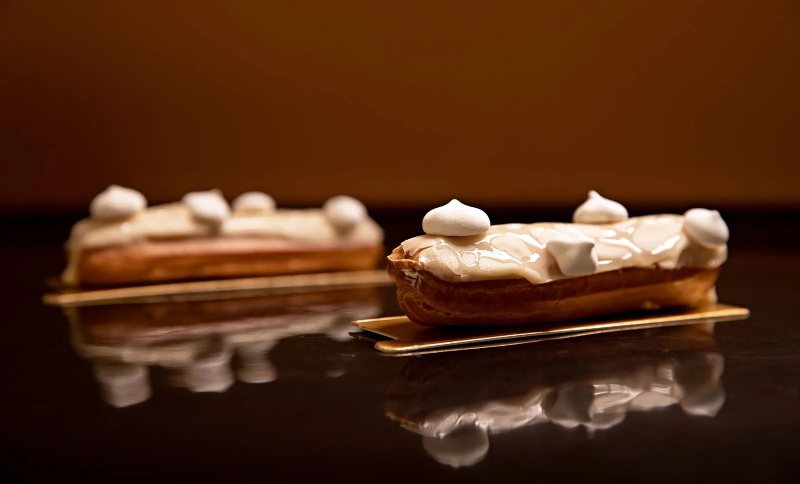
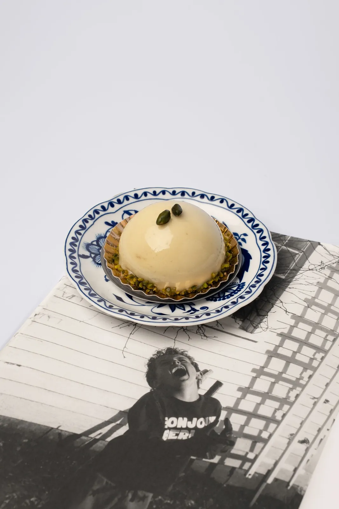
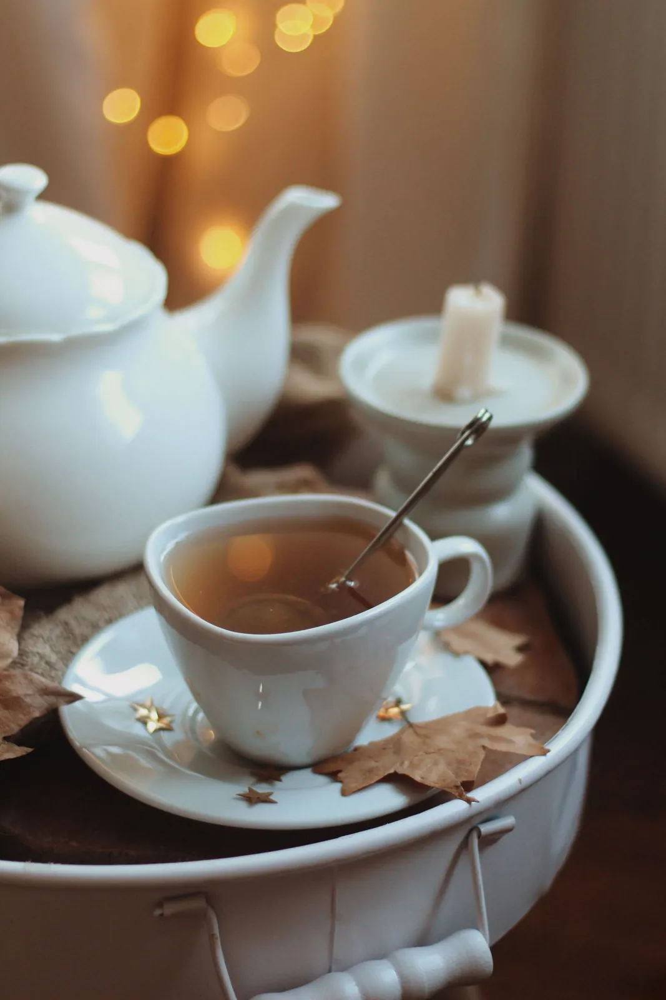
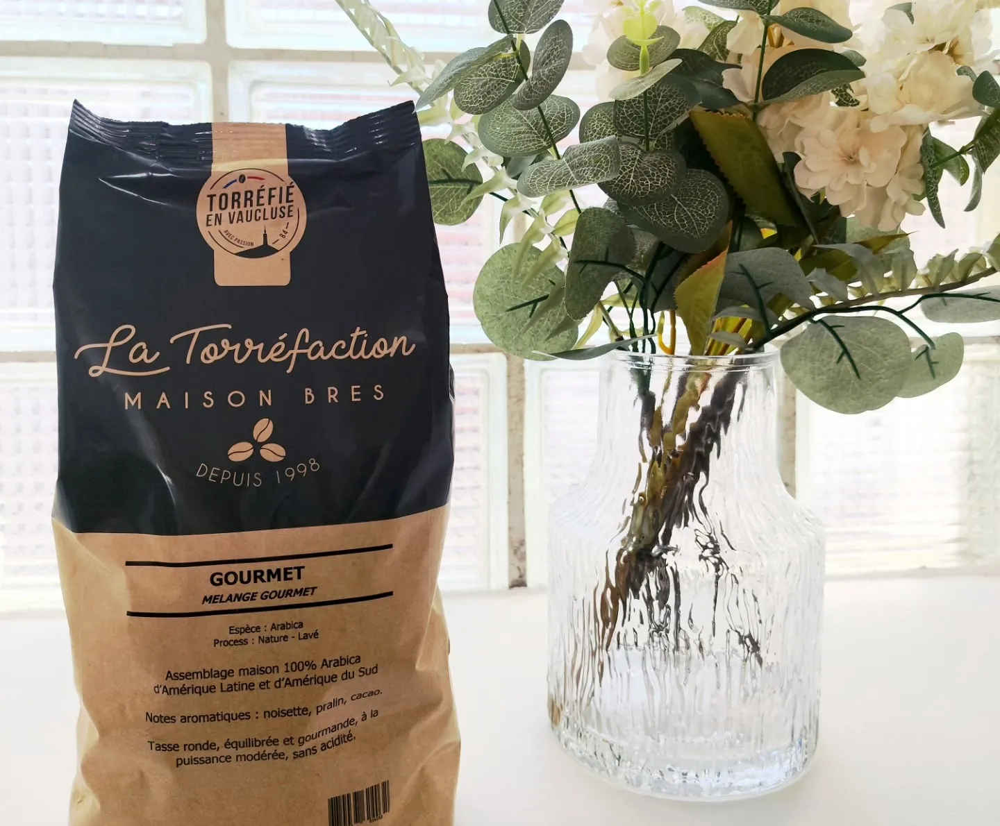
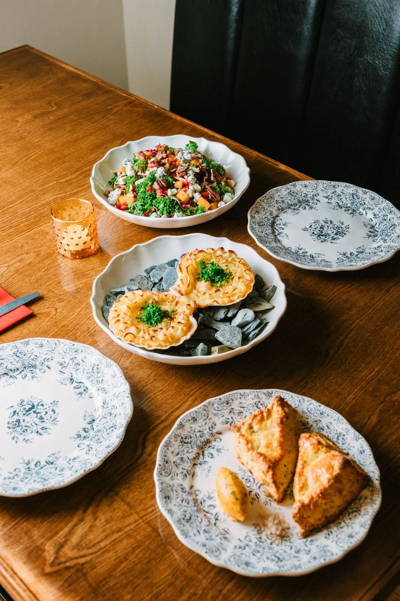
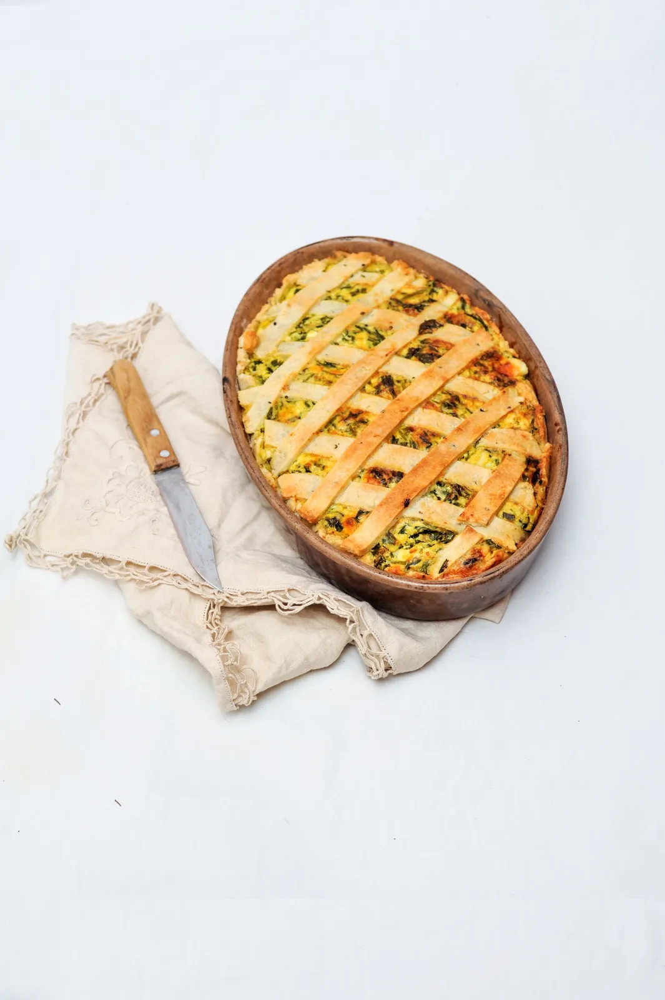

La carte
Tout est fait maison
Pâtisserie fine, salon de thé et plats du jour. Les prix sont affichés en boutique ; les commandes se passent au 06 30 16 89 40.




01 — La carte
Pâtisserie fine
Petits gâteaux et entremets faits maison et de saison. Chaque mois, la collection Astro ajoute le gâteau du signe en cours.
La collection Astro
Un petit gâteau par signe astrologique — en ce moment l’Astro Scorpion, sans gluten. Voir la collection
Prix en boutiquePetits gâteaux du jour
La vitrine change avec les saisons
Prix en boutiqueGrand format
Les gâteaux de la collection existent en grand format — sur commande
Sur commandePraliné noisette maison
Noisettes torréfiées, caramel et une pointe de fleur de sel, glissé dans les gâteaux
Prix en boutique


02 — La carte
Salon de thé & café
Sur place, dans un cadre cosy, chaleureux et moderne — ou à emporter.
Café de la Torréfaction Maison Bres
Torréfié à Sarrians, dans le Vaucluse : artisanal et local
Prix en boutiqueThé
Le salon de thé, avec une pâtisserie de la vitrine
Prix en boutiqueChocolat chaud
Avec une part de cake ou un cookie
Prix en boutiqueFormule goûter
Un cookie ou une part de cake, avec un jus Kookabara ou un chocolat chaud (vacances de la Toussaint)
6 €


03 — La carte
Le midi
Une petite restauration du midi : le plat du jour, fait maison.
Plat du jour
Annoncé chaque jour en boutique
Prix en boutiqueSur place ou à emporter
Au salon de thé, ou à la maison
Prix en boutiqueEt un dessert
La vitrine est juste à côté
Prix en boutique
Une envie précise ? Un seul numéro
06 30 16 89 40Sur place ou à emporter · 37 rue du 19 Mars 1962, Entraigues-sur-la-Sorgue